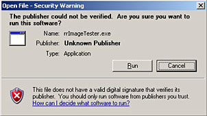
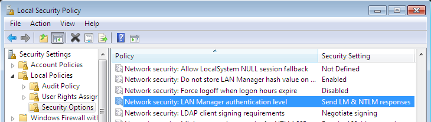
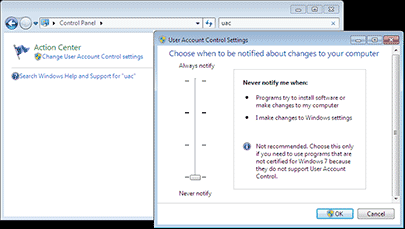

This chapter is about OS-specific issues with windows.
Trusted Network
If you get this warning message,
then you have to change how windows
detects your local area network.
|

|
Please follow these steps:
- Open the windows control panel
- Choose "Internet Options".
- Change to tab "Security".
- Select the Icon "Local Intranet".
- Click on the Button "Sites".
- Click on the Button "Advanced"..
- Add \\Your_Fileserver to the list. (replace "Your_Fileserver" with the name of the fileserver the RR files are on)
Note: This is a per user setting in windows.
How to pin an RR app to the taskbar?
Windows 7 has some restrictions that dis-allow programs to be pinned to the taskbar.
There are cases in which programs on a network share are not allowed and/or if the executable file contains a reserved word (like help, control...).
Workaround:
- First click with the right mouse button on the desktop.
- In the context menu select "New" -> "Text Document":
- Change the name of the text file into a meaningful front part (e.g.: "rrControl"), and - important - the file extension has to be ".exe".
(If the file extension "txt" does not appear, previously deactivate in Windows Explorer via menu "Organize" -> "Folder and search options" -> tab "View" -> "Hide extension to known file types".)
- Ignore the warning from Windows 7 and answer the question:
"Are you sure you want to change it?" with "Yes".
- After that the icon has changed to a standard icon for EXE files.
- Click on the file with the right mouse button. Now a menu item "Pin to Taskbar" appears. Choose this and a new icon appears in the taskbar.
- Right-click on the icon in the taskbar and then again with the right mouse button on the "Program" (here: "rrControl"). In the context menu select "Properties"
- Now change on tab "Shortcut" the "Target" to either the batch file ([RR]\win__rrControl.bat) or the executable ([RR]\bin\win\rrControl.exe)
- The icon can now be selected with the button "Change Icon". Click on "Browse..." and select the executable ([RR]\bin\win\rrControl.exe)
- The "fake program" text file on the desktop (here: "rrControl.exe") may be deleted.
- The new shortcut in the taskbar can be used immediately. However, the changed icon sometimes appears only after a reboot.
If the mouse hovers over the shortcut in the taskbar then the name appears as a "Tooltip" above the link.
Samba + rrClient Service
Problem description:
You are not using domain accounts.
You can access your samba (Linux or OSX) when you login at your windows (7/8) workstation.
If you start the client manually, there is no error.
But if you start the client as service, the client cannot access the fileserver any more.
Solution:
You have to open the Local Security Policy via the windows system control. (or you can type "secpol.msc" as executable to run at the windows start button)Please change the "Network security: LAN manager authentication level" settings on your windows station to "Send LM & NTLM responses":

Windows 7 - UAC
Some applications are not able to run in service mode if the UAC in Windows 7/8 is enabled.
We have reports that
- Maya crashes right away before even opening a scene.
- MayaPython crashes on the command maya.standalone.initialize()
- AFX reports an error if the user documents& settings folder is not in its default location on C:\
If you have any of these issues, please try to disable UAC.
How to disable UAC:
- Please open the windows control panel.
- Enter UAC in the search box at the top right.
- Click on the only icon left "Action Center".
- Move the UAC slider to the bottom.
- Save.
- Restart the machine.
